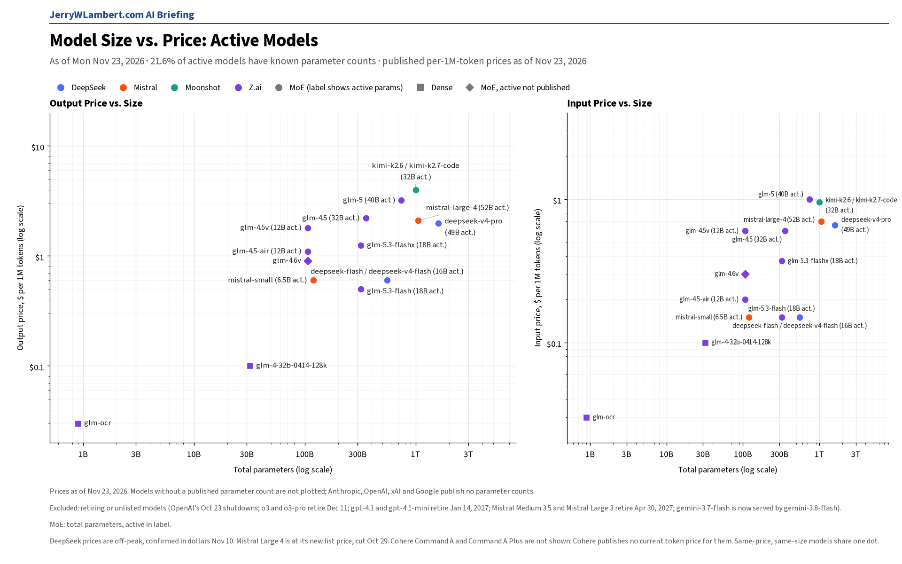
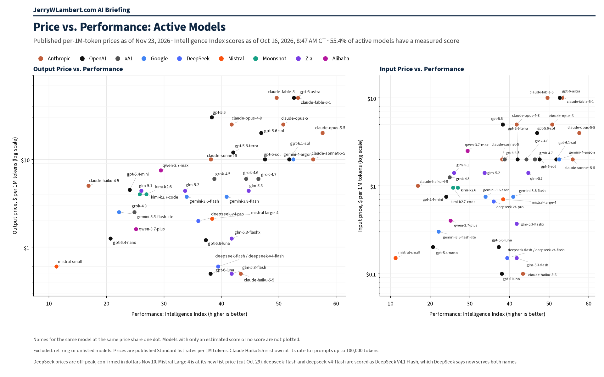

Daily Model Brief, November 23, 2026
xAI says grok-build-0.1 reached end of life on Thursday, November 19 and is no longer served on its API. StepFun began billing its StepAudio 3 voice models overnight, and Alibaba added a live voice model billed by the second and listed Qwen4-Max in its United States (Virginia) region. No list token price changed on an existing text model since Friday.
Download PDF SubscribeExecutive Summary
xAI's release notes now say grok-build-0.1 reached end of life on Thursday, November 19 and is no longer served on the API. Its price list still shows the model at $1.00 input, $0.20 cached and $2.00 output per million tokens, doubling for prompts of 200K tokens or more, so treat those prices as historical. xAI names no replacement.
StepFun's free period for its StepAudio 3 voice models ended at 10:00 PM CT on Sunday, November 22 (noon Monday, China time), and billing is now on. Realtime speech costs $0.125 per session minute, counted by the second, and text to speech $14.00 per million input characters. StepFun says it also adjusted some other voice model prices at the same time; the listed StepAudio 3 prices match what it published last week.
Alibaba added a live voice model, qwen-audio-3.1-live, billed per second of session time: $0.000710 per second in Singapore (about $0.043 per minute) and $0.000471 per second in China (Beijing). Each session bills at least three seconds, billing continues through silence and idle time, and any backend model it calls is billed separately at its token rates. New users get 36,000 free seconds (10 hours) in Singapore for 90 days. Alibaba also now lists Qwen4-Max (qwen4-max) in its United States (Virginia) region at $1.50 input and $4.50 output per million tokens, the same as International (Singapore).
OpenAI's help page for dots, its hosted agent with its own cloud computer, now says Enterprise workspaces pay no fee for dots through Wednesday, January 13, 2027, and billing for all enabled dots begins Thursday, January 14 at flat rates OpenAI has not published. It also says moving from Pro to Plus loses access to your dot, and dots are rolling out to selected Plus users and to Business Standard members in the United States.
Perplexity corrected its documentation: the legacy pplx-decider-v1.1-27b and pplx-decider-v1-27b names both point to pplx-decider-v1-27b and bill at $0.02 per million input tokens. They do not select pplx-decider-v1.2, as the page said before.
No vendor I track changed a standard list token price on an existing publicly available text or chat model since Friday's brief.
Last week's news stands. Google's Genie 4 (genie-4) costs $1.50 per million input tokens, $9.00 per million text output tokens and $17.50 per million video output tokens, which Google puts at about $0.10 per second of video. GPT-Live-1.1 and GPT-Live-1 bill $0.05 per minute while active and $0.02 per minute on standby for WebRTC sessions, and OpenAI is winding down Flex processing with no retirement date yet. Perplexity's Decisions API charges $0.0005 per successful URL fetch, its Agent API xhigh level uses GPT-6.2 Sol, Alibaba lists Mindlab's mindlab/macaron-v1.1-venti-pro at $2.00 input and $10.00 output, and MiniMax lists 50% off 4K images on its H3 image models with no end date. Google's Gemini 4 Neon (gemini-4-neon) lists at $3.00 input, $0.15 cached and $15.00 output per million tokens, one price across its 1M-token context window, with Batch and Flex at half and Priority at 1.8 times; Argon and Carbon cost $2.00, $0.10 and $10.00 until November 30 and $4.00, $0.20 and $20.00 from Tuesday, December 1. Perplexity's pplx-embed-v2-context-9b costs $0.12 per million text tokens and $0.42 per million image tokens, its pplx-embed-v2-context-0.6b $0.02 and $0.40, and its Context API can score pages against your criteria for Decisions API input tokens. OpenAI ends Fast and Priority processing for GPT-5.2, GPT-5.4 and GPT-5.4 mini with EU data residency on Monday, January 11, 2027. Microsoft retired the Azure o1, o3 and o4-mini models and Llama 4 Maverick on Thursday, November 19, with the replacements in its updated table, and DeepSeek's server-side search and fetch calls are free while their results are billed as model tokens. GPT-6.2 Astra (gpt-6.2-astra) lists at $8.00 input, $0.40 cached and $40.00 output and GPT-6.2 Sol (gpt-6.2-sol) at $2.00, $0.10 and $10.00, both for prompts up to 272K tokens. GPT-6.2 Ultrafast costs three times Standard through Sunday, February 28, 2027 (Pacific time) and six times from Monday, March 1. OpenAI's two-hour and eight-hour background windows bill 30% and 40% below Standard. Perplexity's Context API costs $1.00 per 1,000 URLs returned. Alibaba's batch price for Qwen4-Max (qwen4-max) in its China (Beijing) region is $0.707 input and $2.12 output, half the regional list price, and the International (Singapore) list price stays at $1.50 and $4.50. Perplexity's Monitor API costs $0.001 per succeeded Search run and $0.001 per counted URL in a succeeded Page run. OpenAI's omni-moderation-csam-latest image classifier is free for approved organizations, and Anthropic's text watermark now covers Claude Opus 4.6, Opus 4.5, Sonnet 4.5 and Haiku 4.5.
Dates coming up: OpenAI has not yet published a retirement date for Flex processing. Fast mode for Claude Opus 4.8 is removed and GPT-5.6 Sol's promotional price ends on Monday, November 30. On Tuesday, December 1, Gemini 4 Carbon and Gemini 4 Argon prices double, Gemini 2.5 Pro and 2.5 Flash requests start routing to newer models, and OpenAI shuts down the gpt-image-1.5, gpt-image-1-mini and chatgpt-image-latest image models. OpenAI's GPT-5 and o3 shutdowns follow on Friday, December 11, Google's preview speech models shut down on Friday, December 18, OpenAI ends Fast and Priority processing for EU data residency on GPT-5.2 and GPT-5.4 models on Monday, January 11, 2027, OpenAI starts billing Enterprise dots on Thursday, January 14, 2027, and GPT-6.2's introductory Ultrafast rate ends after Sunday, February 28, 2027.
Items from earlier briefs still stand: Mistral Large 4 (mistral-large-4) is generally available at $0.70 input and $2.10 output and returns an HTTP 400 error when reasoning_effort is set to none; Mistral Medium 3.5 and Mistral Large 3 retire on Friday, April 30, 2027; and OpenAI's 10% uplift on FedRAMP endpoints continues.
Not confirmed today: Amazon prices, Tencent's main price list and model list, Moonshot's per-search web search prices, IBM's model list, Microsoft, which lists no pay-as-you-go prices, Qwen4-Max cache prices, which Alibaba's page stopped showing during this morning's check, and three DeepSeek documentation pages (models, news and the search and fetch guide) that moved and now return not found; DeepSeek's price list itself is unchanged. Their last confirmed prices stand. Performance scores in the chart are still as of October 16 and have not been refreshed since.
What This Means for Customers
- If you still call
grok-build-0.1, those requests no longer run. xAI says the model reached end of life on November 19 and names no replacement, so move that work to another Grok model and test it first. - If you build on StepFun's StepAudio 3 voice models, the free period is over. Realtime speech now bills at $0.125 per session minute, counted by the second, and text to speech at $14.00 per million input characters.
- If you test
qwen-audio-3.1-live, close sessions as soon as the conversation ends. Alibaba bills every second a session is open, including silence and idle time, with a three-second minimum. - If you call Alibaba from its United States (Virginia) region,
qwen4-maxis now listed there at $1.50 input and $4.50 output per million tokens, the same as International. - If your company runs dots on ChatGPT Enterprise, budget for Thursday, January 14, 2027, when billing begins for all enabled dots. OpenAI says to ask your account representative for rates.
- If you build on Genie 4, budget by the second of video. At $17.50 per million video output tokens, Google's stated rate is about $0.10 per second ($6.05 per minute) of streamed video with audio, plus $1.50 per million input tokens, and billing continues until you end the session.
- If you run live voice on
gpt-live-1orgpt-live-1.1over WebRTC, set up standby so silent stretches bill at $0.02 per minute instead of $0.05. Standby applies only while inference is paused. - If any of your traffic depends on OpenAI's Flex processing, plan now to move it to Standard or Batch. OpenAI will not add Flex to new models and has not yet given a retirement date.
- If you plan Gemini 4 Argon or Carbon spend past December 1, price
gemini-4-neonalongside them. Neon's $3.00 input and $15.00 output sit below the $4.00 and $20.00 Argon and Carbon move to that day. Output includes thinking tokens on all three, so compare cost per task, not per token. - If you run GPT-5.2, GPT-5.4 or GPT-5.4 mini with EU data residency on Fast or Priority processing, move that traffic to Standard processing or to a GPT-6.2 model before Monday, January 11, 2027.
- If you still have o1, o3 or o4-mini deployments on Azure, they retired Thursday, November 19. Microsoft points Standard deployments to
gpt-5.6-solorgpt-5.6-terra, and Batch deployments, where those are not offered, togpt-5.4orgpt-5.4-mini. - If you embed chunked documents or page images, Perplexity's
pplx-embed-v2-context-0.6bcosts $0.02 per million text tokens andpplx-embed-v2-context-9b$0.12. Requests must set input_type to query or document, or they return an HTTP 400 error. - If you run
gpt-6-astra, testgpt-6.2-astra. It lists 20% lower on input and output and 60% lower on cached input, but OpenAI changed how GPT-6.2 handles reasoning on edited conversations and the instructions field, so check your integration before you switch. - If you run
gpt-6.1-sol,gpt-6.2-solcosts the same on Standard, Batch and Fast. If you depend on Flex, keep that work on a model that has a Flex price; OpenAI lists none for GPT-6.2. - If you plan to use Ultrafast on GPT-6.2, budget for March 1, 2027. The rate goes from three times Standard to six times, which doubles the Ultrafast bill for the same work.
- If your OpenAI jobs can wait two to eight hours, test the background completion windows in the Responses API. Token rates are 30% lower for the two-hour window and 40% lower for the eight-hour window on GPT-6.2 Astra, GPT-6.2 Sol, GPT-6.1 Terra and GPT-6 Luna.
- If your
deepseek-flashtraffic uses DeepSeek's web tools or a web_search tool, searches the model runs no longer add $0.75 per 1,000 on top of tokens. Calls you make straight to the Search or Fetch API still do. The results those searches return still count as model tokens. - If you fetch known URLs through Perplexity, its Context API bills $0.001 per URL that comes back, and failed URLs are free. Adding scoring criteria adds Decisions API input tokens for each scored page.
- If you run large offline
qwen4-maxjobs in Alibaba's China (Beijing) region, Batch File halves the cost to $0.707 input and $2.12 output per million tokens. Alibaba lists no batch price for International (Singapore). - If you run
qwen3.8-maxin Alibaba's International region, testqwen4-max. It lists 25% lower on input and output ($1.50 and $4.50 against $2.00 and $6.00), and the saving only applies once you change the model string. - If you run Claude Opus 4.5 or Claude Haiku 4.5 on Microsoft Foundry, plan the move to
claude-opus-5-5orclaude-haiku-5-5before Monday, February 22, 2027. - If you run
gemini-3.8-flashfor coding or agent work, testgemini-4-hydrogen. Its $1.50 input and $7.50 output are double 3.8 Flash's $0.75 and $3.75 through December 31, but match the price 3.8 Flash moves to on January 1, 2027. Hydrogen's output price includes thinking tokens, so compare cost per task, not per token. - If you still call
gpt-5,gpt-5-mini,gpt-5-nanooro3, testgpt-6.1-sol,gpt-6.1-terraandgpt-6-lunabefore Friday, December 11. - If you budget for either Gemini 4 model, plan for December 1. Input, cached and output prices all double that day, from $2.00, $0.10 and $10.00 to $4.00, $0.20 and $20.00 per million tokens.
- If you call
gemini-2.5-pro, testgemini-3.8-flashbefore Tuesday, December 1. At today's list prices the routed requests cost less per token ($0.75 input and $3.75 output through December 31, against 2.5 Pro's $1.25 and $10.00 for prompts up to 200K tokens), but 3.8 Flash rises to $1.50 and $7.50 on January 1, 2027. - If you call
gemini-2.5-flash, requests move togemini-3.5-flash-liteon December 1 at the same text list price ($0.30 input, $0.03 cached, $2.50 output). Test the new model first. - If you rely on
gpt-5.6-sol, plan for November 30. Its promotional price runs through that date and OpenAI has not published what it costs afterward. - If you still use Moonshot's K2 models, plan the move to
kimi-k3.1-proby December 1. New accounts cannot use K2, and Moonshot expects to retire it in late December. - If you use fast mode on
claude-opus-4-8, those requests will return an error after November 30. Move fast-mode work toclaude-opus-5-5, or drop the fast setting.
New Models and Price Changes
Prices in USD per 1M tokens.
| Vendor | Model ID | Status | Input | Cached | Output |
|---|---|---|---|---|---|
| xAI | grok-build-0.1 | End of life Thu Nov 19 per xAI's release notes; no longer served on the API. Price list still lists last prices. Long context (200K tokens or more): $2.00 / $0.40 / $4.00. No replacement named. | $1.00 | $0.20 | $2.00 |
| Alibaba | qwen-audio-3.1-live | New. Live voice billed per second of session time: $0.000710 per second Singapore, $0.000471 China (Beijing). Minimum 3 seconds per session; billing continues through silence and idle time; backend model tokens billed separately. Free quota 36,000 seconds in Singapore for 90 days. | Per second | Not applicable | Per second |
| Alibaba | qwen4-max (United States (Virginia) region) | New listing in the Virginia region. Same price in thinking and non-thinking modes up to 1M tokens, matching International (Singapore). Cache prices not confirmed today. | $1.50 | Not confirmed | $4.50 |
| genie-4 | Unchanged. New Thu Nov 19, generally available on the Interactions API; paid tier only. Real-time interactive world generation: 24 fps 16:9 video with 48 kHz stereo audio. Input $1.50 covers text or a reference image. Output: $9.00 per 1M text tokens and $17.50 per 1M video tokens (audio included), about $0.10 per second. No Free tier, Batch, Flex or Priority. | $1.50 | Not available | $9.00 text / $17.50 video | |
| OpenAI | gpt-live-1.1 | Unchanged. New Thu Nov 19. Voice sessions billed per second: $0.05 per minute active; $0.02 per minute standby for WebRTC sessions while inference is paused. Backend model and tool usage billed separately. | Per minute | Not applicable | Per minute |
| OpenAI | gpt-live-1 | Unchanged. Active rate $0.05 per minute; $0.02 per minute standby rate (added Thu Nov 19) for WebRTC sessions while inference is paused. | Per minute | Not applicable | Per minute |
| OpenAI | Flex processing | Unchanged. Labeled beta; being wound down. Stays on listed models, will not be added to new models; retirement date not yet published. | Not applicable | Not applicable | Not applicable |
| Perplexity | Decisions API web grounding URL fetch | Unchanged. Changed by Thu Nov 19. Each successful URL fetch $0.0005 (was $0.001); failed fetches not billed. Each search still $0.001, plus input tokens. | $0.0005 per fetch | Not applicable | Not applicable |
| Alibaba | mindlab/macaron-v1.1-venti-pro | Unchanged. Mindlab model, added Fri Nov 20 to Alibaba's International price table. No cached price listed. | $2.00 | Not listed | $10.00 |
| Perplexity | Agent API xhigh effort | Unchanged. Changed Wed Nov 18: xhigh uses openai/gpt-6.2-sol with no fallback model, replacing Claude Opus 5.5. xhigh@2026-11-11.0 keeps the old setup. Token rates follow the model's listed rates. | Not applicable | Not applicable | Not applicable |
| gemini-4-neon | Unchanged. New Wed Nov 18, generally available; paid tier only. Output includes thinking tokens. Implicit caching only. One price across the 1M-token context window; long decode up to 1M output tokens. Batch and Flex: $1.50 / $0.075 / $7.50. Priority: $5.40 / $0.27 / $27.00. | $3.00 | $0.15 | $15.00 | |
| Perplexity | pplx-embed-v2-context-9b | Unchanged. New Wed Nov 18. Contextualized embeddings for queries, document chunks and images; 2,048 dimensions (or 1,024). Images: $0.42 per 1M tokens. input_type is required. | $0.12 | Not applicable | Not applicable |
| Perplexity | pplx-embed-v2-context-0.6b | Unchanged. New Wed Nov 18. Same embedding space as the 9b model's 1,024-dimension output; 1,024 dimensions (or 512). Images: $0.40 per 1M tokens. | $0.02 | Not applicable | Not applicable |
| OpenAI | gpt-6.2-astra | Listed Tue Nov 17. Prompts up to 272K input tokens. Context window 1.05M; max output 128K. Cache writes: $10.00 (30-minute) or $20.00 (12-hour). Batch: $4.00 / $0.20 / $20.00. Fast: $16.00 / $0.80 / $80.00. Ultrafast: $24.00 / $1.20 / $120.00 through Feb 28, 2027 (Pacific), then $48.00 / $2.40 / $240.00. No Flex price listed. | $8.00 | $0.40 | $40.00 |
| OpenAI | gpt-6.2-sol | Listed Tue Nov 17. Prompts up to 272K input tokens. Context window 1.05M; max output 128K. Cache writes: $2.50 (30-minute) or $5.00 (12-hour). Batch: $1.00 / $0.05 / $5.00. Fast: $4.00 / $0.20 / $20.00. Ultrafast: $6.00 / $0.30 / $30.00 through Feb 28, 2027 (Pacific), then $12.00 / $0.60 / $60.00. No Flex price listed. | $2.00 | $0.10 | $10.00 |
| OpenAI | gpt-6.2-astra-law | New. Legal model configuration. Promotional price through at least Dec 31. Cache writes: $10.00 (30-minute) or $20.00 (12-hour). | $8.00 | $0.40 | $40.00 |
| OpenAI | Background completion windows (Responses API, beta) | New Tue Nov 17. Token rates 30% below Standard for the 2-hour window and 40% below for the 8-hour window, for gpt-6.2-astra, gpt-6.2-sol, gpt-6.1-terra and gpt-6-luna. | -30% / -40% | -30% / -40% | -30% / -40% |
| DeepSeek | Search API / Fetch API | Changed 10:00 PM CT Tue Nov 17. Searches and page fetches the model runs through server-side tools are no longer billed; their results are billed as model tokens. Direct Search API and Fetch API calls: $0.75 per 1,000 successful requests each, unchanged. | Per request | Not applicable | Per request |
| Perplexity | Context API | Per-URL price unchanged since Tue Nov 17: $1.00 per 1,000 URLs returned ($0.001 per URL); failed URLs are free. New: requests with scoring criteria also bill Decisions API input tokens (page text plus your questions, per scored page). Requests without criteria have no token billing. | Per URL | Not applicable | Not applicable |
| Alibaba | qwen4-max (Batch, China (Beijing) region) | Unchanged. New Tue Nov 17. Batch File price, half the region's $1.413 input / $4.24 output list price. Batch Chat: limited-time 50% off list, no end date stated. No batch price listed for the International (Singapore) region. | $0.707 | Not listed | $2.12 |
| Perplexity | Monitor API | Unchanged. Price listed Mon Nov 16. $0.001 per succeeded Search run (billed once however many searches it performs) and $0.001 per counted URL a succeeded Page run retrieves; $1 per 1,000. Failed and skipped runs are free. | Per run | Not applicable | Per URL |
| OpenAI | omni-moderation-csam-latest | Unchanged. New Mon Nov 16. Image classifier on the moderations endpoint. No cost; approved organizations only. | Free | Not applicable | Free |
| Alibaba | qwen4-max | Unchanged. New Mon Nov 16; Alibaba's latest model. International (Singapore) region; same price in thinking and non-thinking modes across the 1M-token context window. Cache writes last confirmed at $1.875 (5-minute) or $3.00 (1-hour); not shown on Alibaba's page in a later check today. Free quota of 1 million tokens for new Singapore users, valid 90 days. Other listed regions: $1.413 input / $4.24 output. | $1.50 | $0.075 | $4.50 |
| Tencent | hy4-flash | Watch item. Listed Mon Nov 16 in Tencent's model list. No price published yet. Hy4 Preview (hy4-preview) is now marked to be discontinued, with no date. | Not listed | Not listed | Not listed |
| gemini-4-hydrogen | Unchanged. New Thu Nov 12, generally available. Output includes thinking tokens. Implicit caching only. Flat price across the 1M-token context window. Batch and Flex: $0.75 / $0.0375 / $3.75. Priority: $2.70 / $0.135 / $13.50. Free tier offered. | $1.50 | $0.075 | $7.50 | |
| DeepSeek | File parsing and OCR API | Unchanged. New Fri Nov 13. $0.225 per 1,000 pages. | Per page | Not applicable | Not applicable |
| DeepSeek | Text to speech (TTS) API | Unchanged. New Fri Nov 13. $0.45 per 10,000 characters; limited-time price $0.225 (50% off), no end date stated. | Per character | Not applicable | Not applicable |
| DeepSeek | Speech to text (ASR) API | Unchanged. New Fri Nov 13. $0.116 per hour of audio; limited-time price $0.058 (50% off), no end date stated. | Per hour | Not applicable | Not applicable |
| gemini-decision-1 | Unchanged. New Wed Nov 11. Decisions API only. Input covers text, image, video, audio and PDF; zero output tokens. No context caching; no Batch API. Free tier offered. | $0.10 | Not available | Not applicable | |
| Alibaba | qwen4-max-preview | Watch item. Earlier preview of Qwen4-Max. No price published yet. | Not listed | Not listed | Not listed |
| gemini-4-carbon | Unchanged. Listed Tue Nov 10. Introductory price through Nov 30; from Tue Dec 1: $4.00 input / $0.20 cached / $20.00 output. Output includes thinking tokens. Implicit caching only. Paid tier only. Context window of 1M tokens. | $2.00 | $0.10 | $10.00 | |
| gemini-4-argon | Unchanged. Same prices as Gemini 4 Carbon, including the Dec 1 step to $4.00 / $0.20 / $20.00. | $2.00 | $0.10 | $10.00 | |
| Anthropic | claude-fable-5-2 | Unchanged. Listed Mon Nov 9. Cache writes: $10.00 (5-minute) or $16.00 (1-hour). Full 1M context at standard pricing; 128K max output. Fast mode: $16.00 input / $80.00 output. Fable 5.1 unchanged at $10.00 / $50.00. | $8.00 | $0.20 | $40.00 |
| Meta | muse-ember-1.0 | Unchanged. Listed Mon Nov 9. Prompts up to 200K tokens. Over 200K the whole request bills at $0.30 input / $0.012 cached / $1.50 output. No cache-write price published. Web search grounding $2.50 per 1,000 queries. | $0.10 | $0.004 | $0.50 |
| Anthropic | claude-mythos-5-2 | Unchanged. Same prices as Fable 5.2, limited to organizations Anthropic has verified. | $8.00 | $0.20 | $40.00 |
| MiniMax | MiniMax-H3-Image | Discount still listed. Image model listed Nov 10. Text input $2.30, image input $1.50, image output $3.80. Highspeed version: $2.30 / $3.00 / $7.60. The 50% discount on 4K images (images of at least 16,600,000 pixels) ended Tue Nov 17 and has been listed again since Fri Nov 20 with no end date stated: 4K example $0.03439 instead of $0.06879 on H3-Image; Highspeed 4K example $0.06501 instead of $0.13001. | $2.30 | Not listed | $3.80 |
| OpenAI | gpt-5.6-sol | Unchanged. Promotional price through Nov 30; not in OpenAI's main price table. No post-promo price published. | $4.00 | $0.40 | $20.00 |
| StepFun | stepaudio-3-realtime | Billing started Sun Nov 22, 10:00 PM CT (12:00 PM Nov 23, China time); free period ended. $0.125 per session minute, billed by the second, partial seconds billed as full seconds. | Per minute | Not applicable | Per minute |
| StepFun | stepaudio-3-tts | Billing started Sun Nov 22, 10:00 PM CT; free period ended. $14.00 per million billable input characters. Voice cloning or design: $1.50 per voice. | Per character | Not applicable | Not applicable |
| gemini-embedding-2-preview | Unchanged. Deprecated Fri Nov 6. Requests route to gemini-embedding-2 and bill at Gemini Embedding 2 rates. | See status | See status | See status | |
| Alibaba | qwen-audio-3.1-asr-flash | Unchanged. Listed Nov 9 (international). qwen-audio-3.0-asr-flash: $0.000035 per second of input audio, output free. | $0.15 | Not listed | $0.47 |
| MiniMax | image-01-live | Unchanged. Listed Nov 9. $0.0035 per image. | Per image | Not applicable | Per image |
| OpenAI | gpt-image-2.6-sunburst | Unchanged. Image model listed Nov 4. Image tokens $8.00 input / $30.00 output / $2.00 cached; text tokens $5.00 input / $1.25 cached; no separate text output price listed. | $8.00 | $2.00 | $30.00 |
| OpenAI | gpt-image-2.6-flare | Unchanged. Image model listed Nov 4. Same list prices as Sunburst: image $8.00 / $30.00 / $2.00 cached; text $5.00 / $1.25 cached. | $8.00 | $2.00 | $30.00 |
| Mistral | mistral-large-4 | Unchanged. Generally available since Nov 5. Named replacement for Mistral Medium 3.5 and Mistral Large 3. No cache-write price published. | $0.70 | $0.07 | $2.10 |
| Tencent | hy4 | Unchanged. Listed Nov 4. Same list price per Tencent's documentation. Billed at 50% of list through Dec 31 (Beijing time); start date not stated. Main price list not confirmed today. | $0.834 | $0.042 | $2.501 |
| gemini-2.5-pro | Deprecated (notice Mon Nov 2). From Tue Dec 1, requests route to gemini-3.8-flash and bill at its rates. Prices shown are for prompts up to 200K tokens. | $1.25 | $0.125 | $10.00 | |
| gemini-2.5-flash | Deprecated (notice Mon Nov 2). From Tue Dec 1, requests route to gemini-3.5-flash-lite, whose text prices are the same. | $0.30 | $0.03 | $2.50 | |
| OpenAI | gpt-6-rosalind | Unchanged. Limited to organizations approved for life sciences research. Cache writes: $18.75 (30-minute) or $37.50 (12-hour). | $15.00 | $1.50 | $75.00 |
| OpenAI | gpt-6-astra-law | Unchanged. Promotional price through at least Dec 31. GPT-6.2 version listed above. | $10.00 | $1.00 | $50.00 |
| OpenAI | FedRAMP endpoints | In effect since Nov 1: 10% uplift on token prices. Standard global endpoint unchanged. | +10% | +10% | +10% |
| DeepSeek | deepseek-flash (also serves deepseek-v4-flash) | Off-peak price; unchanged. Peak-hour prices are double. | $0.15 | $0.003 | $0.60 |
| DeepSeek | deepseek-v4-pro | Off-peak price; unchanged. Peak-hour prices are double. | $0.66 | $0.022 | $1.98 |
| OpenAI | gpt-6.1-terra | Unchanged. Cache writes: $1.25 (30-minute) or $2.50 (12-hour). Prompts over 272K input tokens: 2x input and cache, 1.5x output, for the whole request. | $1.00 | $0.05 | $5.00 |
| OpenAI | gpt-6.1-sol | Unchanged. Same Standard price as gpt-6.2-sol; Terra costs half on every line. | $2.00 | $0.10 | $10.00 |
| Grounding with Google Search (Gemini 3 and newer) | Unchanged. Daily cap of 1,500 requests; 5,000 free searches a month, then $14 per 1,000. | Per request | Not applicable | Per request | |
| Moonshot | Web search (Responses API and Kimi K3 built-in tool) | Terms unchanged. Billed per search the server runs, plus model tokens. Per-call prices still not displayed; not confirmed. | Per call | Not applicable | Per call |
| Moonshot | kimi-k3.1-pro | Unchanged (standard rate). Cache writes: $2.00 (5-minute) or $4.00 (1-hour). | $2.00 | $0.20 | $10.00 |
| Moonshot | kimi-k2.7-code | Unchanged price. Listed as deprecated; closed to new accounts; retirement expected late December. | $0.95 | $0.19 | $4.00 |
| Moonshot | kimi-k2.6 | Unchanged price. Listed as deprecated; closed to new accounts; retirement expected late December. | $0.95 | $0.16 | $4.00 |
| gemini-3.8-flash (also serves gemini-3.7-flash) | Labeled previous-generation. Standard tier unchanged through Dec 31; $1.50 / $0.15 / $7.50 from Jan 1, 2027. Replacement for gemini-2.5-pro from Dec 1. | $0.75 | $0.075 | $3.75 | |
| Alibaba | qwen3.8-max | Unchanged. International (Singapore) region. | $2.00 | Not listed | $6.00 |
| MiniMax | MiniMax-M3.1-Flash | Unchanged. | $0.15 | $0.015 | $0.60 |
| Meta | muse-spark-1.3 | Unchanged (Standard mode). | $1.25 | $0.15 | $4.25 |
| Tencent | Hy3 | Last confirmed Mon Nov 2. Not confirmed today. No cache-write price published. | $0.132 | $0.033 | $0.528 |
| TypeSafe | jev-1.14.0 | Unchanged. jev-latest points here. Output free. | $0.042 | Not listed | Free |
| IBM | granite-4-h-small | Last confirmed price. Not confirmed today. | $0.0636 | Not listed | $0.265 |
- No standard list token price changed on an existing generally available text or chat model since Friday's brief at any vendor I could confirm. xAI retired grok-build-0.1, StepFun's StepAudio 3 voice models are now billed, and Alibaba lists a new live voice model and a United States (Virginia) listing for Qwen4-Max. Tencent has published no price for Hy4 Flash, and Alibaba has published no price for qwen4-max-preview.
- Prices match the last confirmed figures at Anthropic, OpenAI, Google, xAI (Grok), DeepSeek, Moonshot, Z.ai, MiniMax, Mistral, Alibaba, Cohere, Meta, ByteDance, TypeSafe, StepFun and Perplexity.
- Prices from Amazon and Tencent's main price list could not be confirmed today (Tencent's Hy4 figures come from its documentation), Moonshot's per-search prices did not display, IBM's model list could not be confirmed, and Microsoft lists no pay-as-you-go prices. Their last confirmed prices stand, unverified today.
Deprecations
| Vendor | Model ID | Shutdown (CT) | Replacement | Note |
|---|---|---|---|---|
| xAI | grok-build-0.1 | Thu Nov 19, 2026 (in effect; time not stated) | None named | New. xAI's release notes say the model is no longer served on the API; its price list still lists it. |
| Moonshot | kimi-k2.6 kimi-k2.7-code kimi-k2.7-code-highspeed (all K2 models) | Late December 2026 (no exact date) | kimi-k3.1-pro | Unchanged. Closed to newly registered accounts; existing accounts keep access until retirement. |
| gemini-embedding-2-preview | Fri Nov 6, 2026 (in effect) | gemini-embedding-2 | Unchanged. Requests route automatically to the replacement and bill at its rates. | |
| Microsoft (Azure) | Llama-4-Maverick-17B-128E-Instruct-FP8 | Thu Nov 19, 2026 (in effect; time not stated) | None named | Unchanged. |
| Microsoft (Azure) | o1 o1-pro o3 o3-pro o3-deep-research o3-mini o4-mini | Thu Nov 19, 2026 (in effect; time not stated) | gpt-5.6-sol gpt-5.6-terra (o3-mini, o4-mini) | Replacement guidance added Wed Nov 18. Where gpt-5.6 is not offered: Global and US Data Zone Batch to gpt-5.4 or gpt-5.4-mini, EU Data Zone Batch to gpt-4.1 or gpt-4.1-mini, Regional Standard to gpt-5.1. Applies to Azure deployments, not OpenAI's own API. |
| Anthropic | claude-opus-4-8 (fast mode only) | Mon Nov 30, 2026 (time not stated) | claude-opus-5-5 (fast mode) | Unchanged. Fast-mode requests to claude-opus-4-8 will return an error after removal. |
| Anthropic | claude-sonnet-4-5-20250929 | Mon Nov 30, 2026 (time not stated) | claude-sonnet-5-5 | Unchanged. |
| OpenAI | gpt-image-1.5 gpt-image-1.5-2025-12-16 gpt-image-1-mini chatgpt-image-latest | Tue Dec 1, 2026 (time not stated) | gpt-image-2.6-sunburst or gpt-image-2.6-flare | Image models removed from the API. Notice dated Jun 2. |
| gemini-2.5-pro gemini-2.5-flash | Tue Dec 1, 2026 (time not stated) | gemini-3.8-flash gemini-3.5-flash-lite | Unchanged. Requests route automatically to the replacement and bill at its rates. gemini-2.5-flash-lite is not affected. | |
| Microsoft (Azure) | Ministral-3B mistral-medium-2505 | Wed Dec 9, 2026 (time not stated) | ministral-ministral-4b-instruct mistral-medium-3-5 | Unchanged. Applies to Azure deployments, not Mistral's own API. |
| OpenAI | gpt-5 gpt-5-mini gpt-5-nano gpt-5-pro o3 o3-pro (dated snapshots) | Fri Dec 11, 2026 (time not stated) | gpt-6.1-sol gpt-6.1-terra gpt-6-luna | Date unchanged; replacements newly named. gpt-5 and o3 move to gpt-6.1-sol, gpt-5-mini to gpt-6.1-terra, gpt-5-nano to gpt-6-luna, and gpt-5-pro and o3-pro to gpt-6.1-sol in pro reasoning mode. |
| gemini-3.1-flash-tts-preview gemini-2.5-flash-preview-tts gemini-2.5-pro-preview-tts | Fri Dec 18, 2026 (time not stated) | gemini-3.8-flash-tts or gemini-3.8-flash-lite-tts | Unchanged since the move from Tue Nov 17. | |
| OpenAI | gpt-5.2 gpt-5.4 gpt-5.4-mini (EU data residency, Fast or Priority processing) | Mon Jan 11, 2027 (time not stated) | Same models on Standard processing or GPT-6.2 models | New notice Wed Nov 18. EU data residency on Standard processing is not affected. |
| OpenAI | gpt-4.1 gpt-4.1-mini gpt-4o-2024-08-06 gpt-4o-2024-11-20 gpt-4o-mini-2024-07-18 | Wed Jan 13, 2027, 6:00 PM CT | gpt-6-luna | Unchanged. OpenAI lists Jan 14, 2027 with no time; 6:00 PM CT Jan 13 is 00:00 UTC Jan 14. |
| Microsoft (Azure) | gpt-4o (version 2024-05-13) | Thu Jan 14, 2027 (time not stated) | gpt-5.1 (version 2025-11-13) | Unchanged. Applies to Azure deployments, not OpenAI's own API. |
| Microsoft (Azure) | Llama-3.3-70B-Instruct | Sun Jan 31, 2027 (time not stated) | None named | Unchanged. |
| Microsoft (Azure) | cohere-command-a mistral-small-2503 | Mon Feb 15, 2027 (time not stated) | Cohere-command-a-plus-05-2026 mistralai-mistral-small-4-119b-2603 | Unchanged. |
| Microsoft (Azure) | claude-opus-4-5 claude-haiku-4-5 | Mon Feb 22, 2027 (time not stated) | claude-opus-5-5 claude-haiku-5-5 | Unchanged since the Mon Nov 16 move from 2026 dates; replacements named. Applies to Microsoft Foundry deployments, not Anthropic's own API. |
| gemini-2.5-flash-native-audio-preview-12-2025 | Wed Mar 31, 2027 (time not stated) | gemini-3.8-live | Unchanged since the move from Tue Nov 17. | |
| OpenAI | gpt-5.4-nano gpt-5.4-nano-2026-03-17 | Thu Apr 1, 2027 (time not stated) | gpt-6-luna | Unchanged. Also retiring that day: gpt-5.3-codex and gpt-5.1, with gpt-6-sol as their replacement. |
| OpenAI | gpt-image-2 gpt-image-2-2026-04-21 | Wed Feb 10, 2027 (time not stated) | gpt-image-2.6-sunburst or gpt-image-2.6-flare | Unchanged. Image model removed from the API. |
| Microsoft (Azure) | Kimi-K2.6 Kimi-K2.7-Code | Fri Apr 16, 2027 (time not stated) | None named | Unchanged. Azure's date is later than Moonshot's own K2 retirement. |
| Mistral | mistral-medium-3-5 mistral-large-2512 | Fri Apr 30, 2027 (time not stated) | mistral-large-4 | Unchanged. Deprecated Sat Oct 31; still callable until retirement. Prices no longer listed. |
| Microsoft (Azure) | embed-v-4-0 | Tue Jun 1, 2027 (time not stated) | Cohere-embed-v5-fast, Cohere-embed-v5-pro | Unchanged. |
| Microsoft (Azure) | Cohere-rerank-v4.0-fast Cohere-rerank-v4.0-pro | Tue Sep 14, 2027 (time not stated) | Cohere-rerank-v5-fast Cohere-rerank-v5-pro | Moved one day from Mon Sep 13 in Microsoft's Wed Nov 18 update. |
| Microsoft (Azure) | gpt-oss-120b | Wed Sep 15, 2027 (time not stated) | None named | Unchanged. |
| Microsoft (Azure) | DeepSeek-V3.2 DeepSeek-V3.2-Speciale | Tue Nov 2, 2027 (V3.2); Mon Nov 1, 2027 (V3.2-Speciale); time not stated | DeepSeek-V4.1-Flash DeepSeek-V4-Pro | DeepSeek-V3.2 moved one day from Mon Nov 1 in Microsoft's Wed Nov 18 update. |
| gemini-3.1-flash-live-preview | No shutdown date announced | gemini-3.8-live | Unchanged. Was Tue Nov 17; Google now lists no date. | |
| Anthropic | claude-haiku-4-5-20251001 | Not sooner than Thu Oct 15, 2026; no date set | None named | Watch item. Still active with no date set. |
| Cohere | command-r command-r-plus | Deprecated Sep 15, 2025; no shutdown date set | command-r-08-2024 command-r-plus-08-2024 command-a-03-2025 | Closed to new customers; existing users keep access until retirement. |
- OpenAI says Flex processing is a beta it is winding down. It remains on the models that list it, will not be added to new models, and OpenAI will publish the retirement date once confirmed.
- Microsoft's Azure retirement table, updated November 18, also moves gpt-image-1.5 on Azure to June 16, 2027 (OpenAI's own API still removes it on December 1), gpt-4o-transcribe (version 2025-03-20) to February 26, 2027, and gpt-4o-mini-transcribe and gpt-4o-mini-tts (version 2025-03-20) to January 20, 2027. It now lists Azure retirement dates for the GPT-6 models, the earliest October 26, 2027 for gpt-6.1-terra.
- Retirement of two preview versions of Microsoft's Azure model-router (2025-05-19 and 2025-08-07) stands at January 27, 2027.
- Microsoft has pushed Azure retirement for gpt-5-mini (version 2025-08-07) and gpt-5.1 (version 2025-11-13) out to July 13, 2027. These Azure dates do not change OpenAI's own API dates.
- OpenAI's transcription notice is unchanged: whisper-1, gpt-4o-transcribe, gpt-4o-mini-transcribe, gpt-4o-transcribe-diarize and the /v1/audio/translations endpoint shut down February 26, 2027.
Price Tracker
Shares of the full tracked population.
- Tracked models: 1,934 (count as of October 25).
- Audited pricing, confirmed against the vendor's own published prices: 13.1% of the full tracked population.
- Unaudited pricing: 5.3%.
- The rest have no public per-token price (47.6%: self-hosted open weights, retired or unpublished) or are duplicate listings of another tracked model (34.0%).
Agent Platforms
Hosted AI agents that come with their own persistent cloud computer.
- Grok Bot (xAI): its own persistent cloud computer. On the X Subscription it is included on Premium, Super and Ultra, draws from the same weekly usage pool as Cursor and the Grok apps, and prepaid credit covers usage past the pool. The latest release is v1.2.3 (dated November 18, after v1.2.0 on November 16): connector pages let you set each tool to Always allow, Auto-review, Needs approval or Blocked, a routine that loses a connector sign-in skips its scheduled runs until you sign back in and sends its reconnect card as a notification and as a Slack or Microsoft Teams message, and signing up requires being 18 or older. Plan prices could not be re-checked today; last confirmed unchanged.
- dots (OpenAI): "Each dot works on its own cloud computer." The first dot is included in Pro and Business Premium at no extra cost, and dots are rolling out to selected Plus users outside the European Economic Area, the UK and Switzerland and to Business Standard members in the United States. Moving from Pro to Plus loses access to your dot. Enterprise dots carry no fee through January 13, 2027; billing for all enabled dots begins January 14 at flat rates OpenAI has not published.
- Muse (Meta): "You and your Muse share your own dedicated computer in the cloud." Runs on Muse Spark 1.3, whose API price is unchanged at $1.25 input, $0.15 cached and $4.25 output per million tokens. Muse subscription billing could not be verified today.
- Manus: the Cloud Computer add-on is a persistent server billed separately at $30 a month (2 vCPUs, 4 GB RAM, 70 GB storage) or $50 a month (2 vCPUs, 8 GB RAM, 120 GB storage). No change.
- Genspark Claw: runs "on a dedicated cloud computer provisioned just for you," which requires a Lite, Standard or Powerful Cloud Computer subscription, a flat monthly fee, and an idle cloud computer does not use credits. Genspark publishes no dollar amounts on its help pages. No change to pricing.
Model Size vs. Price

Among active models with a known parameter count (21.6% of active models), price rises with total size (rank correlation 0.69 on output price). No plotted price changed since Friday. Anthropic, OpenAI, xAI and Google publish no parameter counts, so their models are not plotted. Gemini 2.5 Pro and 2.5 Flash, now retiring, are not counted as active in either chart. Prices as of November 23, 2026.
Price vs. Performance

Among active models with a performance score (55.4% of active models), price rises with performance only loosely (rank correlation 0.55 on output price). Claude Haiku 5.5 leads at $0.50 or less (43.4). At the frontier, Gemini 4 Argon scores 52.6 and GPT-6.1 Sol 51.8, each at $10 output, while xAI's Grok 4.7 scores 46.5 at $6. Scores as of October 16, 2026 (not refreshed since); prices as of November 23, 2026.
All times Central. Vendor prices, dates and model IDs are as of 8:46 AM CT on November 23, 2026. Chart prices are as of November 23, 2026. Performance scores are as of October 16, 2026 and have not been refreshed since. Recently released models, including Claude Fable 5.2, Muse Ember 1.0, Gemini 4 Carbon, Gemini Decision, Gemini 4 Hydrogen, Qwen4-Max, GPT-6.2 Astra, GPT-6.2 Sol, Gemini 4 Neon and Genie 4, are not yet in the charts. Price Tracker percentages are shares of the full tracked population; chart percentages are shares of active models. Items that could not be confirmed are marked unverified.